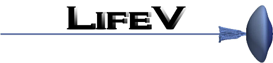

Ivan Fumagalli
Ph.D.
MOX Laboratory - Department of Mathematics
Politecnico di Milano
Piazza Leonardo da Vinci, 32,
20133 Milano, Italy
(Personal page on the Department website)
+39 02 2399 4699
ivan.fumagalli AT polimi.it

UNDER CONSTRUCTION
I am interested in the numerical analysis, scientific computing and optimal control of industrial, bio and real-life applications. In particular, my main focus is on problems with moving geometries, such as free-boundary and immersed-interfaces problems (in fluid dynamics, but not exclusively), and I have been investigating the numerical treatment of moving contact lines. I am intrigued by all the levels of the mathematical description of a phenomenon, ranging from modeling and theoretical analysis, to numerical approximation, and to scientific computing. Concerning optimal control, I am particularly attracted to shape optimization and other control problems involving geometry displacements. I am also interested in model order reduction: for many applications, computational efficiency is a must.
In my current activity, I am directly involved in collaborations with the following clinical partners:Software tools
Scientific computing and HPC

Image and surface/mesh processing


Professional experience
Feb 2023 - today
Assistant Professor (Junior - RTDa)
at MOX - Dipartimento di Matematica, Politecnico di Milano
Dec 2022 - Feb 2023
Post-doc Researcher
in the PRIN projectAdvanced polyhedral discretisations of heterogeneous PDEs for multiphysics problems project
at MOX - Dipartimento di Matematica, Politecnico di Milano
May 2018 - Nov 2022
Post-doc Researcher
in the iHEART project
at MOX - Dipartimento di Matematica, Politecnico di Milano
Sep 2017 - Mar 2018
Analyst and Developer
at MOXOFF S.p.A
Sep 2016 - Jul 2017
Project fellow
at MOXOFF S.p.A
Experience abroad
Feb - Apr 2016
Visiting student in the group of Prof. R.H. Nochetto, Department of Mathematics, University of Maryland, College Park, USA
Education
PhD in Mathematical Models and Methods in Engineering
at MOX - Department of Mathematics, Politecnico di Milano
2014 - Jul 2017
Main research topics: numerical analysis of free-surface flows, optimal control and shape optimization for partial differential equations, reduced basis methods
Thesis: Numerical approximation and optimal control of free surface problems with moving contact line
MSc in Mathematical Engineering
at Politecnico di Milano
2011 - 2013
orientation: Computational Sciences and Engineering
Thesis: Shape Optimization for Stokes flows: a reference-domain approach
Grade: 110/110 cum laude
BSc in Mathematical Engineering
at Politecnico di Milano
2008 - 2011
Thesis: Test a priori di modelli LES per la turbolenza omogenea e isotropa
Thesis: (A priori tests on LES models for homogeneous and isotropic turbulence)
Grade: 110/110 cum laude